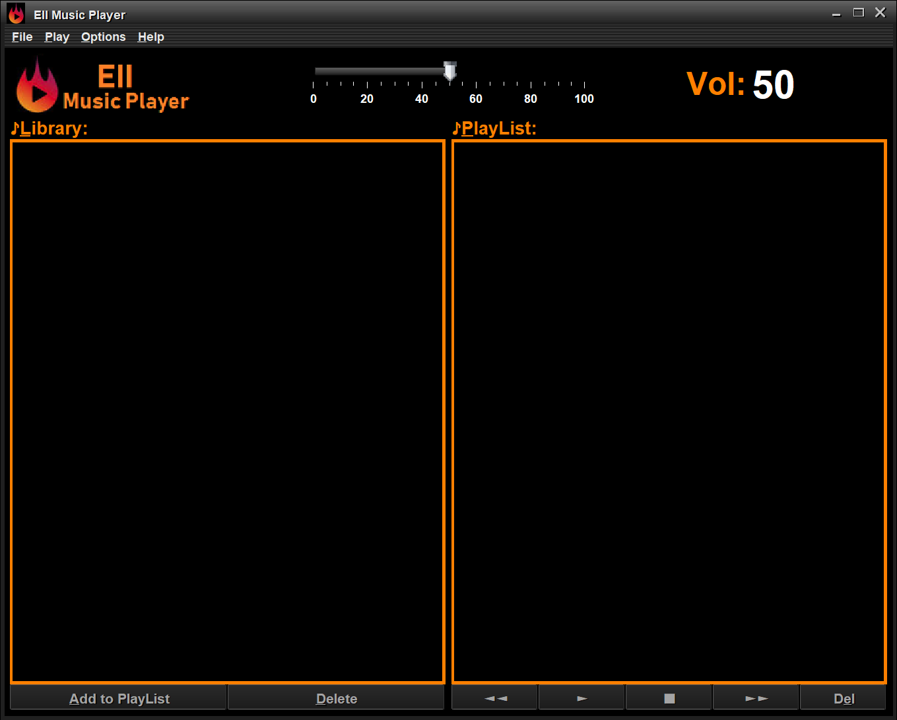

EII Music Player, bienvenido a la introducción
Bienvenido a la aplicacion EII Music Player, esta aplicacion esta pensada para reproduccir musica, guardada en su dispositivo.
En los diferentes documentos que se encuentran en esta ayuda, se prentende enseñar el funcionamineto de la aplicación

Las opciones del reproductor son las siguientes:
- Play: Reproduce la cancion seleccionada o la primera cancion de la lista
- Stop: Para la cancion que está sonando actualmente
- Forward: Reproducce la cancion siguiente a la seleccionada
- Rewind: Reproducce la cancion anterior a la seleccionada
- Del: elimina la cancion seleccionada